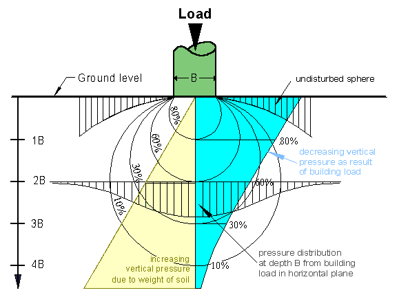
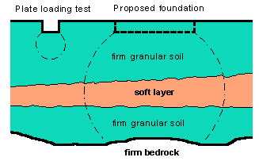

BEARING CAPACITY OF SOILSThe bearing capacity depends on the behaviour of the ground under a building and its interaction with the foundation. (Note that we make a distinction between footings and foundation. The term foundation may refer in some sources to footings.) The structural load of a building must be safety and economically transferred to the ground without unacceptable settlement. A site investigation should be carried out to find out what type of structure it supports, its loading and the amount of movement that can be tolerated. For large building constructions a geotechnical site investigation according to AS 1726-1993 should be carried out. The requirements for the classification of a site and the design and construction of a footing system for a single dwelling house, townhouse or the like are found in AS 2870-1996 Residential slabs and footings-Construction. The ultimate bearing capacity for a typical foundation base is the average vertical pressure on the ground that leads to failure by shear, in other words the average contact pressure between the foundation and the soil that will produce shear failure in the soil The maximum safe bearing capacity is the maximum value of contact pressure to which the soil can be subjected without risk of shear failure. This is based entirely on the strength of the soil and is the ultimate bearing capacity divided by an appropriate factor of safety. The allowable bearing pressure is according AS2870-1996
(Residential slabs and footings-Construction) the maximum bearing pressure
that can be sustained by the foundation from the proposed footing system
under service loads over the design range of soil moisture conditions.
Allowable bearing pressure shall be taken into consideration both the
site conditions and the ability of the building system to accommodate
settlement. Pressure distribution in soilThe pressure at depth h in a foundation is due to the weight of the building
and the self-weight of the soil above the depth h.  Figure 1Figure 1 illustrates the theory of pressure distribution within the foundation.
The soil mass acts as an elastic medium. The circular footing load placed
on the soil mass will induce stresses within the soil. The circles, known
as bulbs of equal pressure, give an indication of the vertical pressure
below the foundation. As can be seen the pressure from the building load
decreases (see lower diagram in Figure 1) while the pressure from the
self-weight of the soil increases. From the bulb pressure you will get
some idea of the depth of soil affected by a footing. The width of a footing
determines at what depth the pressure from the building is reduced to
a neglected value. The pressure should be followed up to a depth of 2B
to 3B (B = footing width) Bulbs of pressure Plastic failure theoryA number of analyses have been carried out to find the ultimate bearing
capacity of the soil, qu, when the footing is at the surface as shown
in Figure 3. Figure 3The footing is moving downwards into the soil with no attendant rotation. The triangular wedge of soil immediately below the footing goes down with the footing and suffers no deformation, and creates an area of plastic flow (I) which is prevented from moving outwards by the passive resistance of wedge (II). |